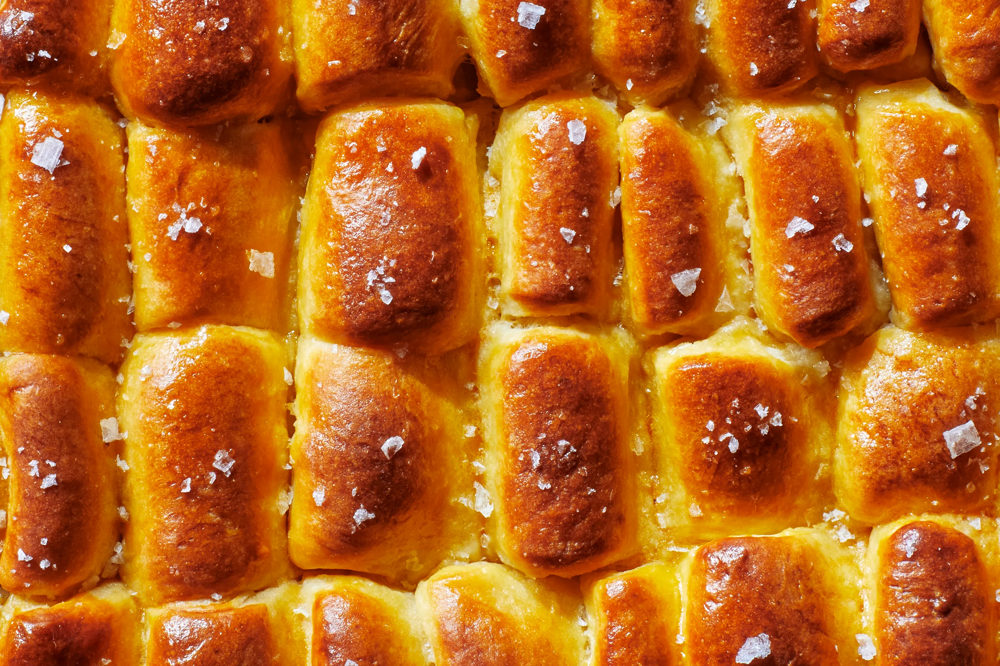

Invented by the Parker House Hotel during the 1870s, the Parker House roll is a butter-rich, soft, and delicate bread roll that is tender on the inside and crisp on the outside. An interesting fact is that these bread rolls are somewhat sweet, which has been a feature of American rolls during the 19th century.
Meal prep time : 2 hours 45 minutes
Servings : 24